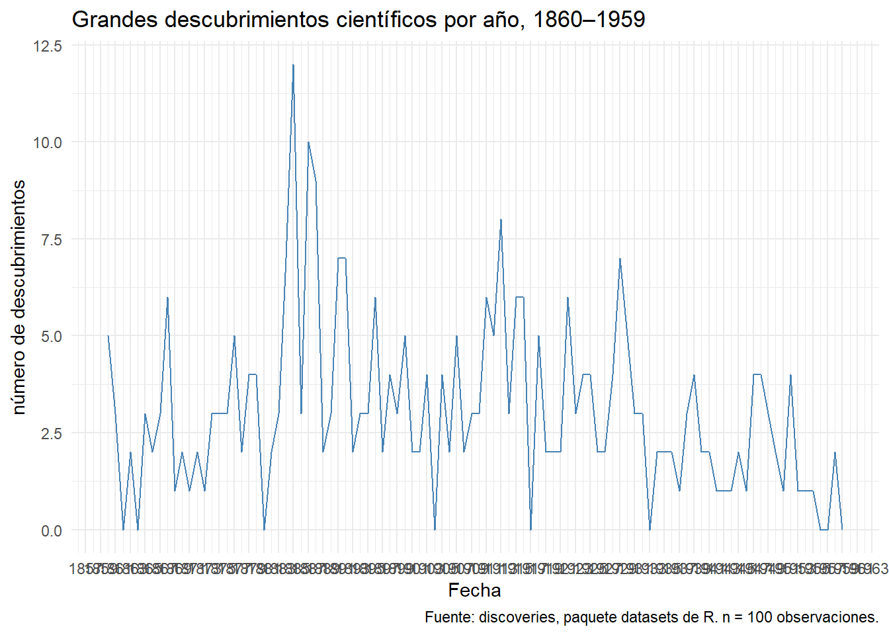
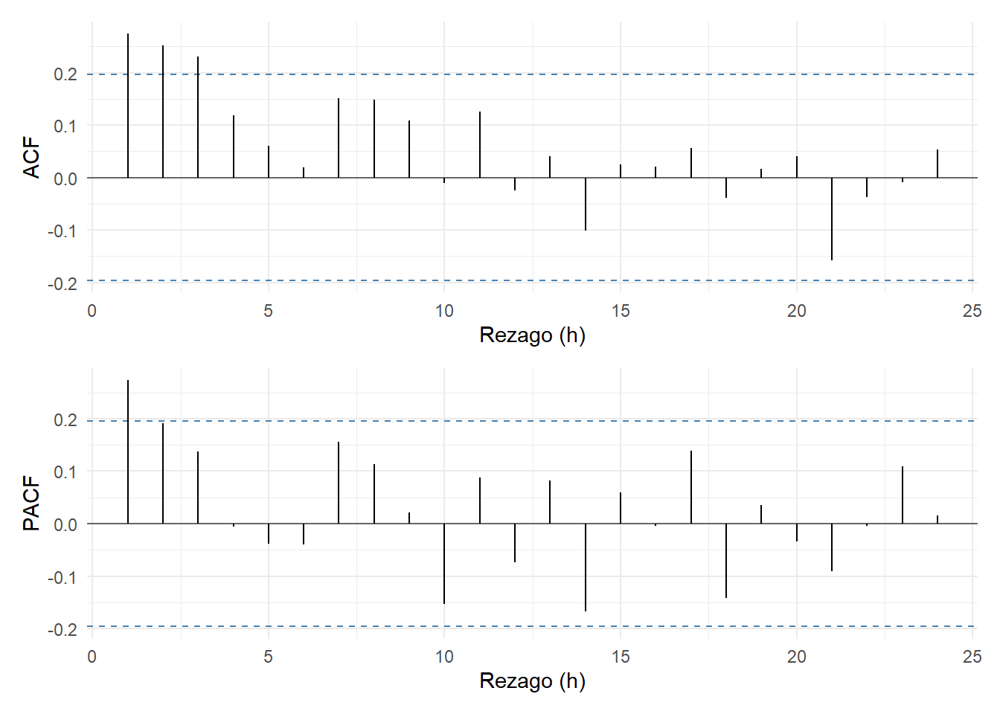
Series de Tiempo, codigo 3009297


Se utilizó la serie discoveries, que registra el número de grandes descubrimientos científicos por año entre 1860 y 1959, con frecuencia anual (100 observaciones). En el gráfico se observa que el nivel de la serie oscila alrededor de un valor aproximadamente constante, sin tendencia sostenida a lo largo de los años. Sin embargo, en el tramo cercano a 1885 se presenta una elevación anómala comparada con el resto del período. Esto se confirma al comparar la media de la primera mitad de la muestra (3.44) con la de la segunda mitad (2.76): la diferencia es moderada y no refleja un desplazamiento sostenido del nivel, sino que está influida por ese tramo puntual.
Para leer el correlograma de forma individual, el rezago \(r_1\approx 0.27\) decae rápidamente, y solo el/los rezago(s) 1, 2, 3 cruza la banda de ruido blanco de \(\pm 0.196\) (\(\pm1{,}96/\sqrt{100}\)), sin ningún patrón sistemático de decaimiento lento ni picos periódicos.
Esa lectura se confirma con una prueba conjunta. \(H_0: \rho_1=\dots=\rho_{24}=0\) (la serie no tiene autocorrelación conjunta hasta el rezago 24) contra \(H_1\): al menos un \(\rho_h\neq0\). El estadístico es \(Q_m=T(T+2)\sum_{h=1}^{m} r_h^2/(T-h)\sim\chi^2_m\) bajo \(H_0\) (aquí \(p=0\) porque la prueba se aplica a la serie, antes de ajustar cualquier método). Ljung-Box sobre la serie: estadístico observado = 36.254 (\(gl=24\)), valor crítico (5%) = 36.415, valor p = 0.052. no se rechaza \(H_0\). En términos de la serie, esto indica que, tomada en conjunto, no hay evidencia de dependencia lineal más allá de lo esperado por azar. En conjunto, la evidencia visual y la prueba formal confirman que la serie es estacionaria en media.
Esta serie es adecuada para el método de media simple, ya que este método utiliza toda la historia disponible hasta el momento, asignando un mismo peso a cada dato: el pronóstico en \(t+1\) es el promedio acumulado de todo lo observado hasta \(t\). Como discoveries no presenta tendencia ni estacionalidad, y su nivel es aproximadamente constante, el supuesto detrás de la media simple (\(Y_t = \beta_0 + \varepsilon_t\)) es razonable para esta serie.
| h | fecha | y_real | y_pronosticado | error |
|---|---|---|---|---|
| 1 | 1948-01-01 | 4 | 3.31 | 0.69 |
| 2 | 1949-01-01 | 3 | 3.31 | -0.31 |
| 3 | 1950-01-01 | 2 | 3.31 | -1.31 |
| 4 | 1951-01-01 | 1 | 3.31 | -2.31 |
| 5 | 1952-01-01 | 4 | 3.31 | 0.69 |
| 6 | 1953-01-01 | 1 | 3.31 | -2.31 |
| 7 | 1954-01-01 | 1 | 3.31 | -2.31 |
| 8 | 1955-01-01 | 1 | 3.31 | -2.31 |
| 9 | 1956-01-01 | 0 | 3.31 | -3.31 |
| 10 | 1957-01-01 | 0 | 3.31 | -3.31 |
| 11 | 1958-01-01 | 2 | 3.31 | -1.31 |
| 12 | 1959-01-01 | 0 | 3.31 | -3.31 |
Con \(T=100\), la regla \(h=\min\{12,\lfloor0{,}2\,T\rfloor\}\) da \(h=12\). La fecha de corte fue 1947, dejando 88 años para el tramo de estimación (1860-1947) y 12 años para el tramo de validación (1948-1959). Como se observa en la tabla, y_pronosticado es el mismo valor en los 12 años del horizonte. Esto es natural en este método, ya que el pronóstico de la media simple es \(\hat{Y}_{T+h}=\bar{Y}\) para todo horizonte \(h\): no depende de cuántos años adelante se pronostique, siempre es la misma media calculada sobre el tramo de estimación. Además, en la columna de error se observa que 10 de los 12 años tienen error negativo, es decir, el valor real quedó por debajo de lo que predijo el promedio histórico; esto sugiere que el nivel del tramo de validación fue más bajo que el nivel promedio del tramo de estimación. El o los único(s) año(s) con error positivo fue(ron): 1948, 1952.
| Método | MSE | MAD | MAPE | MASE |
|---|---|---|---|---|
| Media simple | 4.88 | 1.955 | Inf | 0.919 |
| Ingenuo simple | 7.75 | 2.417 | Inf | 1.136 |
Dados los resultados de la tabla, en las métricas comparables (MSE, MAD y MASE) la media simple obtiene un error menor que el ingenuo simple. En particular, el MASE de la media simple es 0.919 y el del ingenuo es 1.136: según la regla de la Clase 3, un MASE mayor a 1 significa que el método produjo un error peor que el del referente más simple posible. Esto conecta con el análisis anterior, donde 10 de los 12 errores de validación fueron negativos: a pesar de usar 88 años de historia, la media simple logró adaptarse a la caída de nivel del tramo final. El MAPE no se pudo comparar porque el tramo de validación contiene ceros, donde la medida queda indefinida.
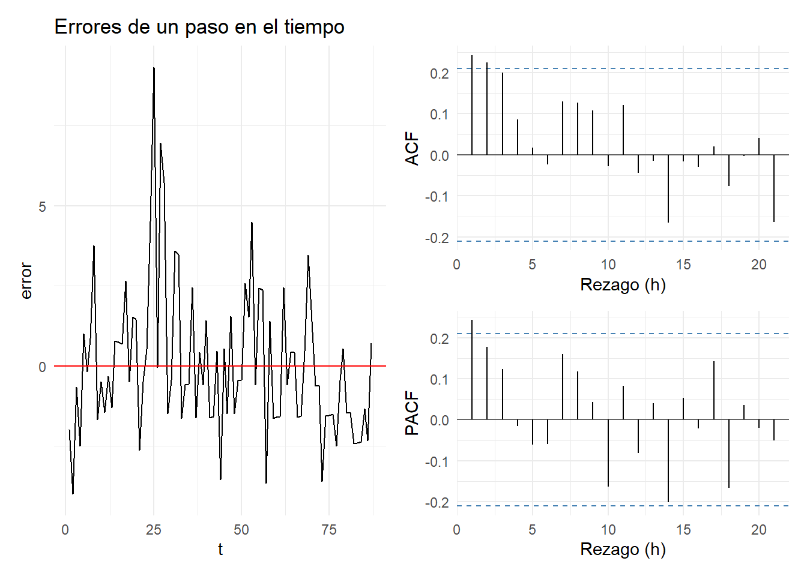
| Prueba | Estadístico | gl | Valor crítico (5%) | Valor p | Decisión |
|---|---|---|---|---|---|
| t (media cero) | 0.194 | 86 | 1.988 | 0.846 | no se rechaza |
| Ljung-Box | 27.643 | 20 | 31.410 | 0.118 | no se rechaza |
| Jarque-Bera | 41.267 | 2 | 5.991 | < 0.001 | se rechaza |
| Durbin-Watson | 1.504 | — | — | — | referencia visual (sin cotas dL/dU tabuladas aquí) |
Sobre los residuos de estimación de la media simple se contrastan tres supuestos, cada uno con sus seis elementos.
Media cero: \(H_0:E(e_t)=0\) vs. \(H_1:E(e_t)\neq0\). Prueba t: estadístico observado = 0.194 (\(gl=86\)), valor crítico (5%) = 1.988, valor p = 0.846. no se rechaza \(H_0\). En términos del método, esto dice que los pronósticos de la media simple no están sesgados de forma sistemática en el tramo de estimación.
Ausencia de autocorrelación: \(H_0:\rho_1=\dots=\rho_{21}=0\) vs. \(H_1\): alguno distinto de cero, con \(gl=m-p=20\) porque la media simple estima \(p=1\) parámetro (\(\beta_0\)). Ljung-Box sobre los residuos: estadístico observado = 27.643 (\(gl=20\)), valor crítico (5%) = 31.410, valor p = 0.118. no se rechaza \(H_0\). Esto es coherente con el correlograma de errores: ningún rezago cruza claramente la banda de significancia, es decir, el método no dejó estructura lineal explotable en los residuos de estimación.
Normalidad: \(H_0\): los residuos provienen de una distribución normal (asimetría 0, curtosis 3) vs. \(H_1\): no. Jarque-Bera: estadístico observado = 41.267 (\(gl=2\)), valor crítico (5%) = 5.991, valor p = < 0.001. se rechaza \(H_0\). con asimetría 1.23 y curtosis 5.31 sobre 87 errores. El gráfico de errores en el tiempo muestra la causa más probable: un valor atípico grande cerca del tramo elevado de mediados de 1880 identificado desde la descripción de la serie, que por sí solo puede romper el supuesto de normalidad sin generar autocorrelación ni sesgo sistemático en el resto de la muestra (\(d=1.50\), próximo a 2).
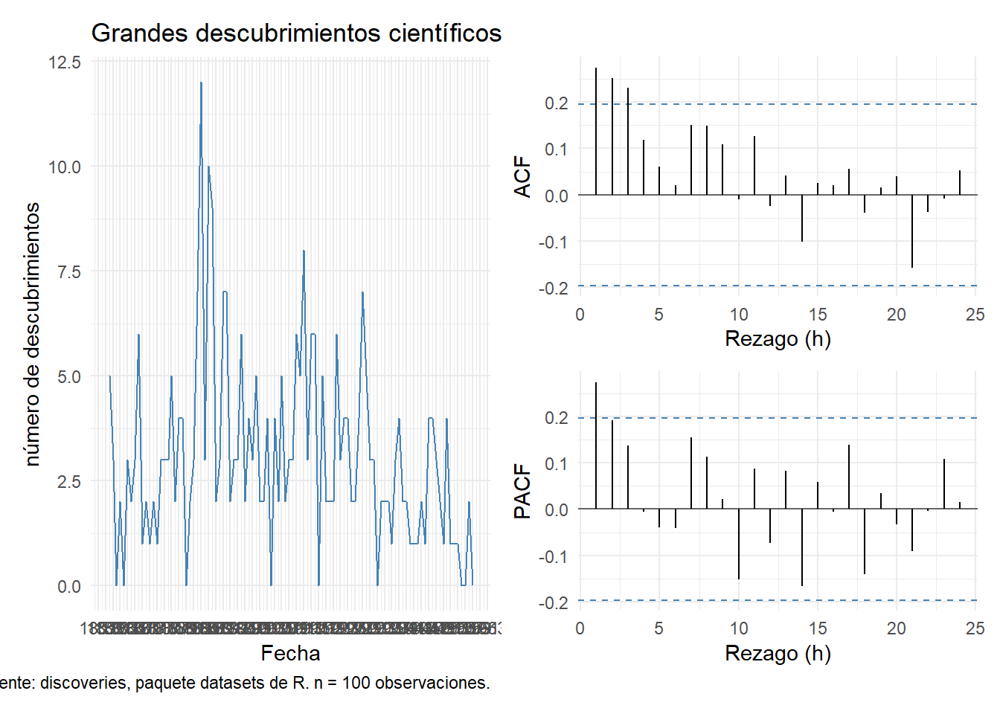
Se reutilizó la serie discoveries. Como se observa en el correlograma, no hay un patrón de tendencia, sino un decaimiento rápido que tarda unos pocos rezagos más en apagarse que en el ejemplo anterior: \(r_1=0.274\), \(r_2=0.252\) y \(r_3=0.231\) salen de la banda de \(\pm0.196\), y solo desde \(r_4=0.119\) la serie entra en la banda. La prueba de Ljung-Box confirma que esa estructura es débil: \(Q_{24}=36.25\) frente a un crítico de 36.42 (\(p=0.052\)), por lo que no se rechaza \(H_0\), pero por un margen muy estrecho. Esto sirve también para la media móvil: la media simple pondera por igual toda la historia y no aprovecha la dependencia de corto plazo que muestran \(r_1\) a \(r_3\); la media móvil, al construirse solo con las últimas \(k\) observaciones, sí puede seguir esa dependencia reciente, aunque a costa de perder la eficiencia de usar toda la muestra.
| h | fecha | y_real | y_pronosticado | error |
|---|---|---|---|---|
| 1 | 1948-01-01 | 4 | 2 | 2 |
| 2 | 1949-01-01 | 3 | 2 | 1 |
| 3 | 1950-01-01 | 2 | 2 | 0 |
| 4 | 1951-01-01 | 1 | 2 | -1 |
| 5 | 1952-01-01 | 4 | 2 | 2 |
| 6 | 1953-01-01 | 1 | 2 | -1 |
| 7 | 1954-01-01 | 1 | 2 | -1 |
| 8 | 1955-01-01 | 1 | 2 | -1 |
| 9 | 1956-01-01 | 0 | 2 | -2 |
| 10 | 1957-01-01 | 0 | 2 | -2 |
| 11 | 1958-01-01 | 2 | 2 | 0 |
| 12 | 1959-01-01 | 0 | 2 | -2 |
| k | MSE |
|---|---|
| 2 | 6.076 |
| 3 | 5.382 |
| 4 | 5.414 |
| 5 | 5.458 |
| 6 | 5.567 |
| 7 | 5.399 |
| 8 | 5.309 |
| 9 | 5.157 |
| 10 | 5.310 |
| 11 | 5.300 |
| 12 | 5.442 |
| k | MSE |
|---|---|
| 9 | 5.156743 |
[1] FALSE| Método | MSE | MAD | MAPE | MASE |
|---|---|---|---|---|
| Media movil | 2.083 | 1.250 | Inf | 0.588 |
| Ingenuo simple | 7.750 | 2.417 | Inf | 1.136 |
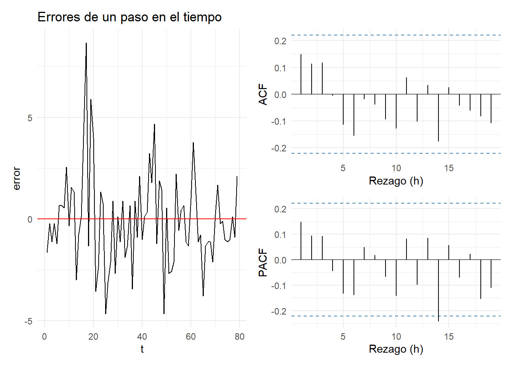
| Prueba | Estadístico | gl | Valor crítico (5%) | Valor p | Decisión |
|---|---|---|---|---|---|
| t (media cero) | -0.230 | 78 | 1.991 | 0.819 | no se rechaza |
| Ljung-Box | 17.005 | 18 | 28.869 | 0.523 | no se rechaza |
| Jarque-Bera | 22.548 | 2 | 5.991 | < 0.001 | se rechaza |
| Durbin-Watson | 1.684 | — | — | — | referencia visual (sin cotas dL/dU tabuladas aquí) |
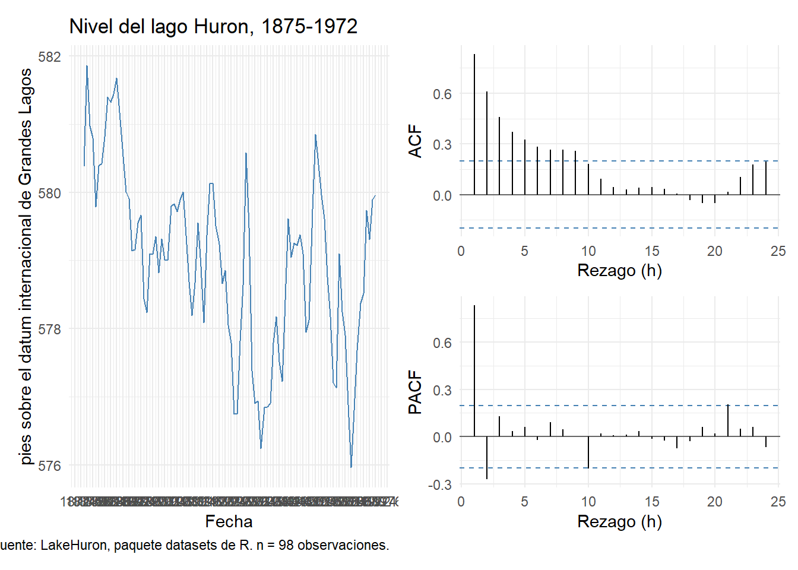
| h | fecha | y_real | y_pronosticado | error |
|---|---|---|---|---|
| 1 | 1961-01-01 | 578.25 | 579.06 | -0.81 |
| 2 | 1962-01-01 | 577.91 | 579.06 | -1.15 |
| 3 | 1963-01-01 | 576.89 | 579.06 | -2.17 |
| 4 | 1964-01-01 | 575.96 | 579.06 | -3.10 |
| 5 | 1965-01-01 | 576.80 | 579.06 | -2.26 |
| 6 | 1966-01-01 | 577.68 | 579.06 | -1.38 |
| 7 | 1967-01-01 | 578.38 | 579.06 | -0.68 |
| 8 | 1968-01-01 | 578.52 | 579.06 | -0.54 |
| 9 | 1969-01-01 | 579.74 | 579.06 | 0.68 |
| 10 | 1970-01-01 | 579.31 | 579.06 | 0.25 |
| 11 | 1971-01-01 | 579.89 | 579.06 | 0.83 |
| 12 | 1972-01-01 | 579.96 | 579.06 | 0.90 |
| alpha | MSE |
|---|---|
| 0.98 | 0.5577592 |
[1] TRUE| Método | MSE | MAD | MAPE | MASE |
|---|---|---|---|---|
| SES | 2.175 | 1.229 | 0.21 | 2.141 |
| Ingenuo simple | 2.238 | 1.243 | 0.22 | 2.164 |
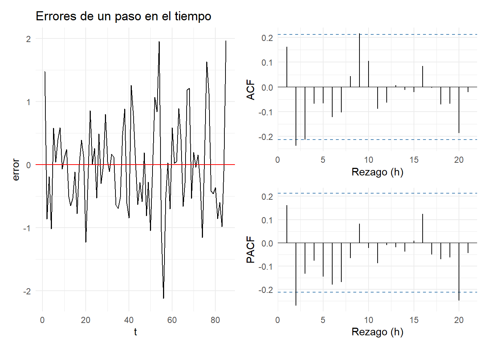
| Prueba | Estadístico | gl | Valor crítico (5%) | Valor p | Decisión |
|---|---|---|---|---|---|
| t (media cero) | -0.194 | 84 | 1.989 | 0.846 | no se rechaza |
| Ljung-Box | 27.617 | 20 | 31.410 | 0.119 | no se rechaza |
| Jarque-Bera | 2.720 | 2 | 5.991 | 0.257 | no se rechaza |
| Durbin-Watson | 1.546 | — | — | — | referencia visual (sin cotas dL/dU tabuladas aquí) |
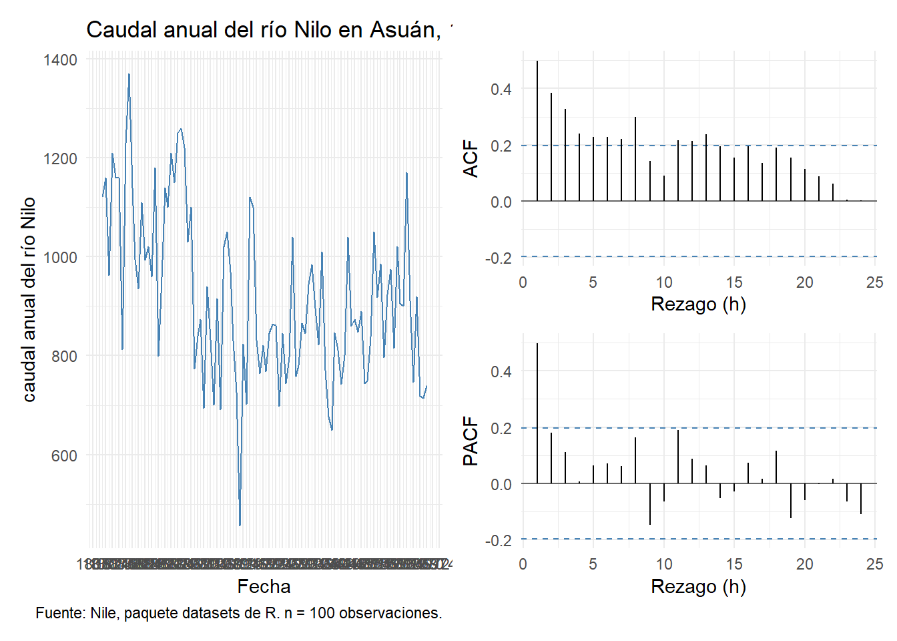
| h | fecha | y_real | y_pronosticado | error |
|---|---|---|---|---|
| 1 | 1959-01-01 | 975 | 907.59 | 67.41 |
| 2 | 1960-01-01 | 815 | 912.90 | -97.90 |
| 3 | 1961-01-01 | 1020 | 918.21 | 101.79 |
| 4 | 1962-01-01 | 906 | 923.52 | -17.52 |
| 5 | 1963-01-01 | 901 | 928.83 | -27.83 |
| 6 | 1964-01-01 | 1170 | 934.14 | 235.86 |
| 7 | 1965-01-01 | 912 | 939.45 | -27.45 |
| 8 | 1966-01-01 | 746 | 944.76 | -198.76 |
| 9 | 1967-01-01 | 919 | 950.07 | -31.07 |
| 10 | 1968-01-01 | 718 | 955.38 | -237.38 |
| 11 | 1969-01-01 | 714 | 960.69 | -246.69 |
| 12 | 1970-01-01 | 740 | 966.00 | -226.00 |
| k | MSE |
|---|---|
| 12 | 27054.27 |
[1] TRUE| Método | MSE | MAD | MAPE | MASE |
|---|---|---|---|---|
| Doble media movil | 24225.19 | 126.304 | 15.44 | 0.951 |
| Ingenuo simple | 19685.00 | 111.000 | 13.45 | 0.835 |
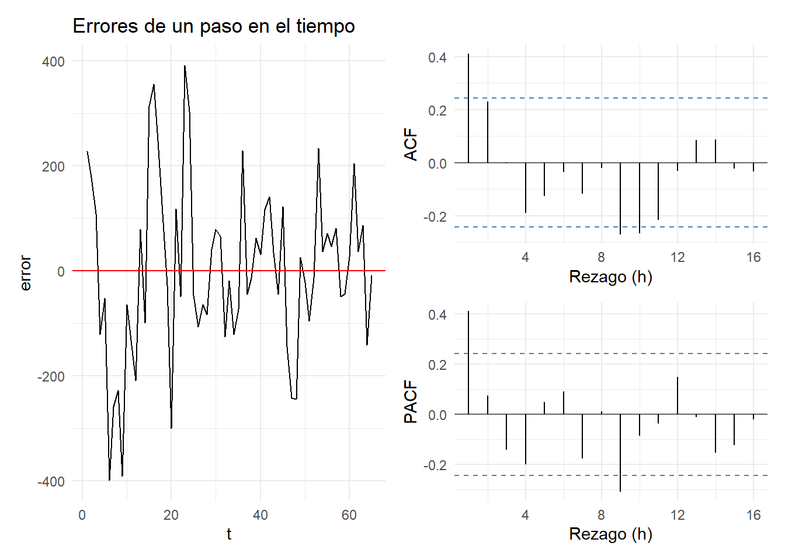
| Prueba | Estadístico | gl | Valor crítico (5%) | Valor p | Decisión |
|---|---|---|---|---|---|
| t (media cero) | 0.081 | 64 | 1.998 | 0.936 | no se rechaza |
| Ljung-Box | 36.654 | 14 | 23.685 | < 0.001 | se rechaza |
| Jarque-Bera | 0.057 | 2 | 5.991 | 0.972 | no se rechaza |
| Durbin-Watson | 1.149 | — | — | — | referencia visual (sin cotas dL/dU tabuladas aquí) |

| Término | Estimación | EE ordinario | EE robusto (HAC) | t (HAC) | Valor p (HAC) |
|---|---|---|---|---|---|
| Intercepto | 12963.288 | 21.958 | 40.733 | 318.252 | 0 |
| t | 50.707 | 0.489 | 1.049 | 48.336 | 0 |
[1] 0.9930688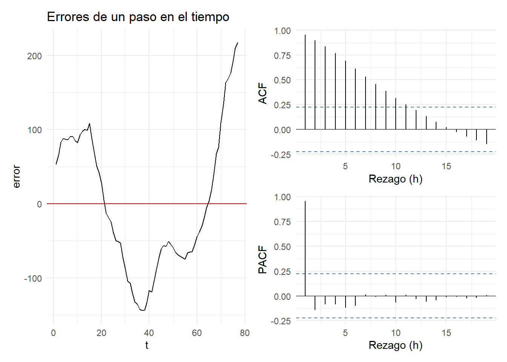
| Prueba | Estadístico | gl | Valor crítico (5%) | Valor p | Decisión |
|---|---|---|---|---|---|
| t (media cero) | -0.000 | 76 | 1.992 | 1.000 | no se rechaza |
| Ljung-Box | 399.468 | 17 | 27.587 | < 0.001 | se rechaza |
| Jarque-Bera | 4.236 | 2 | 5.991 | 0.120 | no se rechaza |
[1] 0.01705571| Método | MSE | MAD | MAPE | MASE |
|---|---|---|---|---|
| Tendencia lineal | 44430.96 | 210.080 | 1.21 | 3.974 |
| Ingenuo simple | 133004.79 | 322.042 | 1.84 | 6.091 |
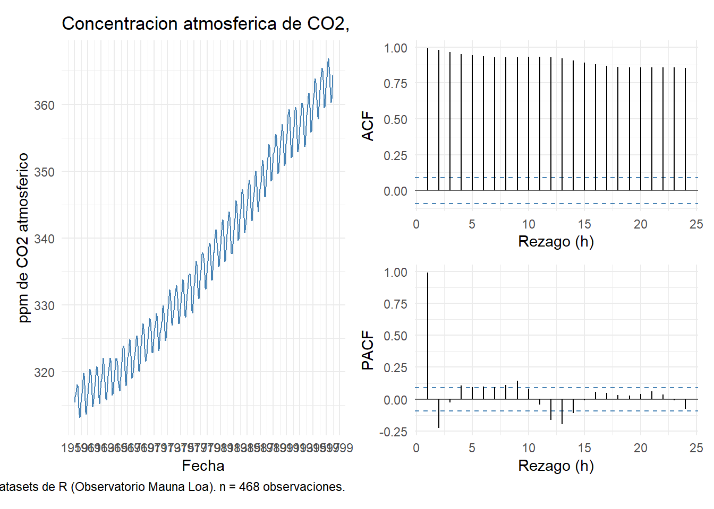
| Término | Estimación | EE ordinario | EE robusto (HAC) | t (HAC) | Valor p (HAC) |
|---|---|---|---|---|---|
| Intercepto | 314.860 | 0.306 | 0.461 | 683.213 | 0 |
| t | 0.066 | 0.003 | 0.005 | 13.444 | 0 |
| t2 | 0.000 | 0.000 | 0.000 | 8.680 | 0 |
[1] 0.9776819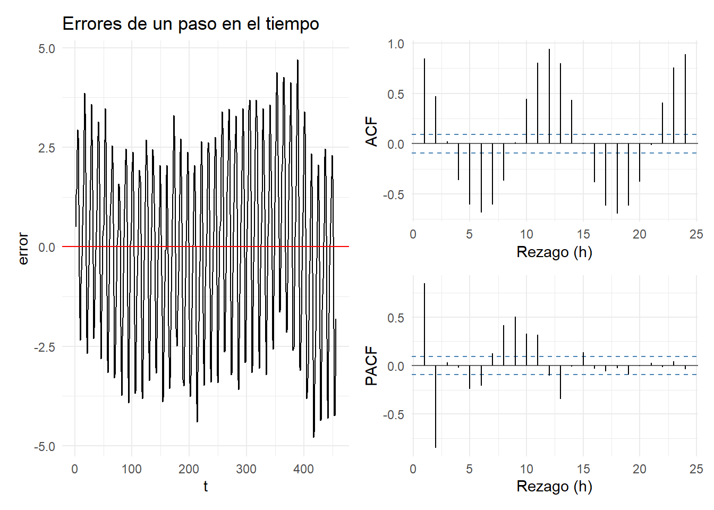
| Prueba | Estadístico | gl | Valor crítico (5%) | Valor p | Decisión |
|---|---|---|---|---|---|
| t (media cero) | -0.000 | 455 | 1.965 | 1.000 | no se rechaza |
| Ljung-Box | 3783.561 | 21 | 32.671 | < 0.001 | se rechaza |
| Jarque-Bera | 18.297 | 2 | 5.991 | < 0.001 | se rechaza |
[1] 0.3064934| Método | MSE | MAD | MAPE | MASE |
|---|---|---|---|---|
| Tendencia cuadratica | 6.898 | 2.040 | 0.56 | 1.904 |
| Ingenuo simple | 5.909 | 2.052 | 0.56 | 1.916 |
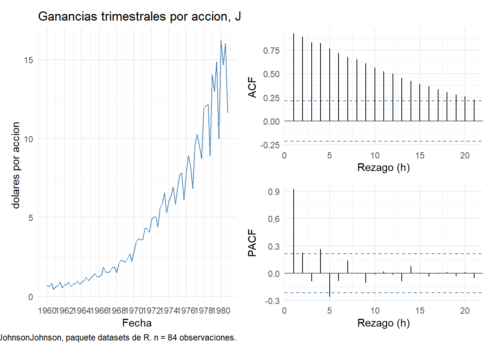
| Término | Estimación | EE ordinario | EE robusto (HAC) | t (HAC) | Valor p (HAC) |
|---|---|---|---|---|---|
| Intercepto | -0.697 | 0.036 | 0.043 | -16.366 | 0 |
| t | 0.043 | 0.001 | 0.001 | 42.962 | 0 |
Intercepto
0.4981558 t
1.043697 [1] 0.9727022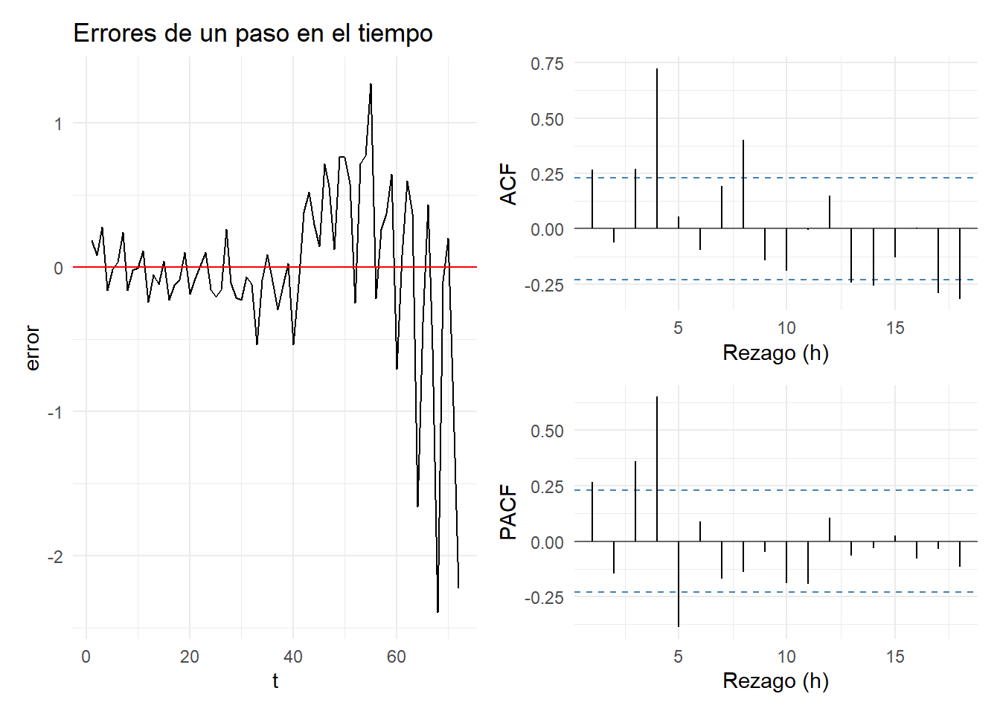
| Prueba | Estadístico | gl | Valor crítico (5%) | Valor p | Decisión |
|---|---|---|---|---|---|
| t (media cero) | -0.370 | 71 | 1.994 | 0.713 | no se rechaza |
| Ljung-Box | 108.202 | 16 | 26.296 | < 0.001 | se rechaza |
| Jarque-Bera | 135.089 | 2 | 5.991 | < 0.001 | se rechaza |
[1] 1.689839| Método | MSE | MAD | MAPE | MASE |
|---|---|---|---|---|
| Tendencia exponencial | 8.329 | 1.883 | 16.92 | 4.225 |
| Ingenuo simple | 22.533 | 4.215 | 30.46 | 9.458 |
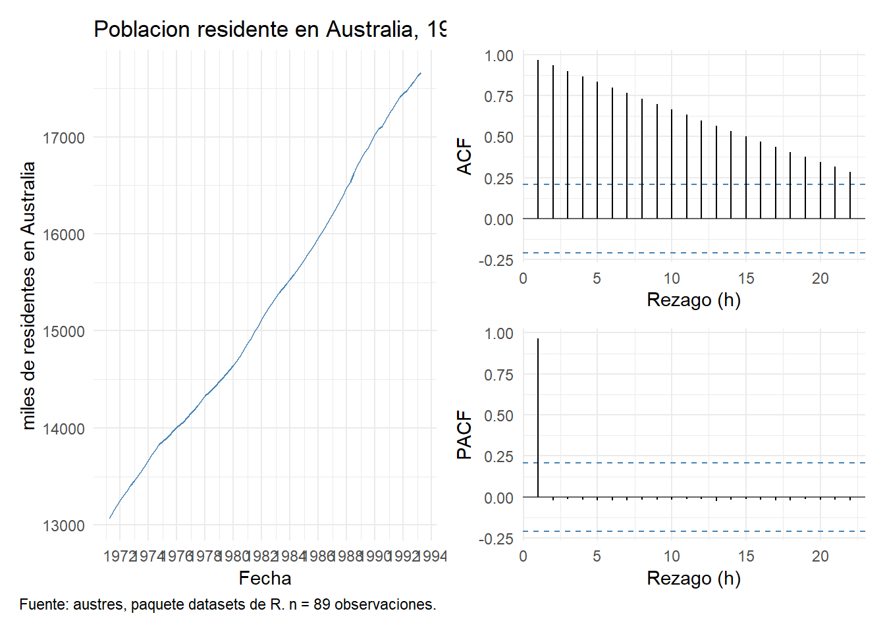
| h | fecha | y_real | y_pronosticado | error |
|---|---|---|---|---|
| 1 | 1990-07-01 | 17106.9 | 17147.39 | -40.49 |
| 2 | 1990-10-01 | 17169.4 | 17208.94 | -39.54 |
| 3 | 1991-01-01 | 17239.4 | 17270.49 | -31.09 |
| 4 | 1991-04-01 | 17292.0 | 17332.04 | -40.04 |
| 5 | 1991-07-01 | 17354.2 | 17393.59 | -39.39 |
| 6 | 1991-10-01 | 17414.2 | 17455.14 | -40.94 |
| 7 | 1992-01-01 | 17447.3 | 17516.69 | -69.39 |
| 8 | 1992-04-01 | 17482.6 | 17578.24 | -95.64 |
| 9 | 1992-07-01 | 17526.0 | 17639.79 | -113.79 |
| 10 | 1992-10-01 | 17568.7 | 17701.34 | -132.64 |
| 11 | 1993-01-01 | 17627.1 | 17762.89 | -135.79 |
| 12 | 1993-04-01 | 17661.5 | 17824.43 | -162.93 |
| alpha | beta | MSE |
|---|---|---|
| 0.95 | 0.8 | 77.79622 |
alpha beta
TRUE FALSE | Método | MSE | MAD | MAPE | MASE |
|---|---|---|---|---|
| Holt lineal | 8207.235 | 78.472 | 0.45 | 1.484 |
| Ingenuo simple | 133004.791 | 322.042 | 1.84 | 6.091 |
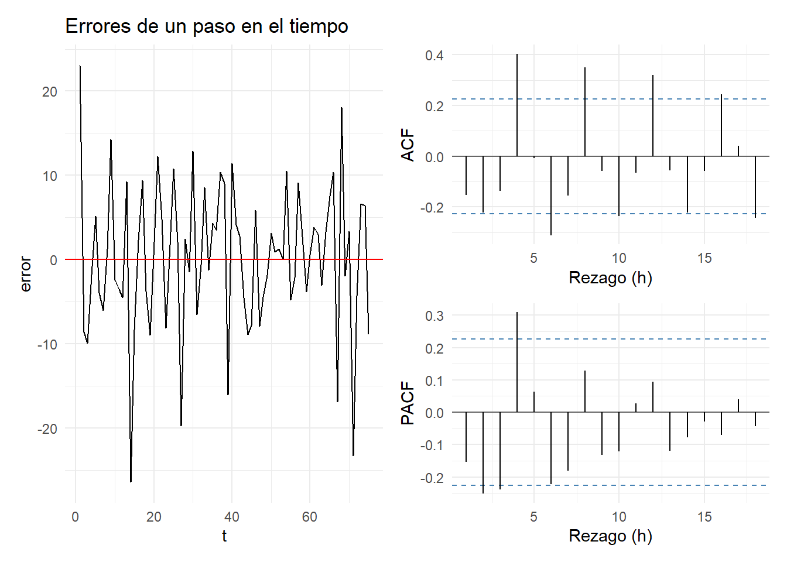
| Prueba | Estadístico | gl | Valor crítico (5%) | Valor p | Decisión |
|---|---|---|---|---|---|
| t (media cero) | 0.231 | 74 | 1.993 | 0.818 | no se rechaza |
| Ljung-Box | 73.681 | 16 | 26.296 | < 0.001 | se rechaza |
| Jarque-Bera | 4.454 | 2 | 5.991 | 0.108 | no se rechaza |
| Durbin-Watson | 2.203 | — | — | — | referencia visual (sin cotas dL/dU tabuladas aquí) |